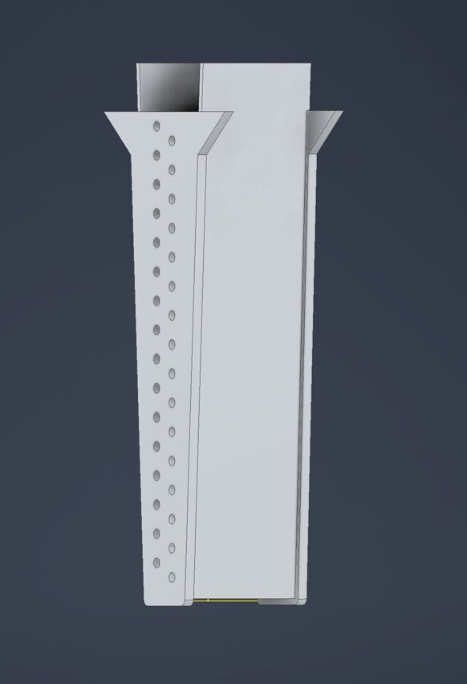

Max Steinhauser
Max Steinhauser
Overview
During my internship at Metromont, I worked across design, manufacturing, and quality control for precast concrete production. The work ranged from CAD modeling of replacement components under tight production deadlines to dimensional inspection that determines whether a pour is approved to proceed.
Highlights
- Designed a replacement concrete form component in Autodesk Inventor under a 1-hour production deadline; model passed manager review and was released directly to manufacturing.
- Developing an in-house fabrication tool to replace a $30,000 third-party solution at an estimated $5,000 — a projected 83% cost reduction.
- Performed pre-pour dimensional QC on concrete forms against engineering drawings using a tape measure and GD&T principles, approving pours before concrete placement and escalating out-of-tolerance conditions to engineering for disposition.
Gallery

